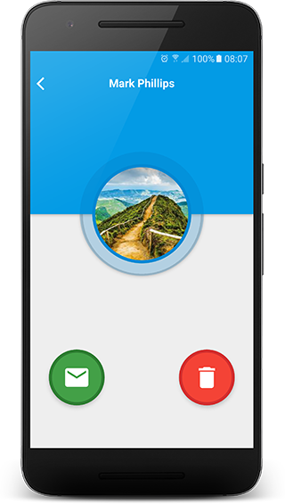

Chat
The Chat option is an easy way for you to talk to others while using EveryPill Reminder.
You can only talk to those who are already added as your friends.
- To talk to a friend for the first time, tap he/she from list of friends, then tap the Chat (envelop) icon.

You'll be redirected to the chat screen, and you can talk from there.
- To talk to a friend that you've previously talked, just access the Chat tab, find the relevant friend from the list, and continue from there.
Delete chat
Note:
It's not possible to delete messages from the chat.
If you want to delete messages, you have delete your friend - so all your conversation will be deleted together with him/her.
You can delete and add (re-add) the same friend as you wish, just remember that this doesn't delete the messages from your friend's App.